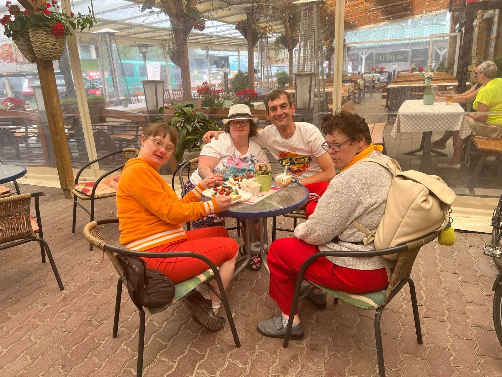

Gdzie jesteśmy
Gofrownia Dan & Dad
72-420 Dźwirzyno, woj. zachodniopomorskie
w centrum kurortu, przy drodze na plażę — obok smażalni „U Pirata"
Znajdziesz nas w sercu Dźwirzyna, przy głównej drodze na plażę. A jak nie możesz — zadzwoń, napisz lub zajrzyj na Facebooka.
Gofrownia Dan & Dad
72-420 Dźwirzyno, woj. zachodniopomorskie
w centrum kurortu, przy drodze na plażę — obok smażalni „U Pirata"
Aktualne smaki, zdjęcia gofrów i opinie naszych gości
| Poniedziałek | 10:00 – 22:00 |
| Wtorek | 10:00 – 22:00 |
| Środa | 10:00 – 22:00 |
| Czwartek | 10:00 – 22:00 |
| Piątek | 10:00 – 22:00 |
| Sobota | 10:00 – 22:00 |
| Niedziela | 10:00 – 22:00 |
Sezon letni. Poza sezonem godziny mogą się różnić — sprawdź na Facebooku.

Nie musisz — ale w sezonie, szczególnie w słoneczne popołudnia, kolejka potrafi być długa. Rezerwacja gwarantuje Ci miejsce bez czekania.
Jasne! Możesz zamówić na miejscu albo wcześniej telefonicznie pod +48 452 110 100 — przygotujemy zamówienie na wskazaną godzinę, idealne na plażę.
Tak, uwielbiamy urodziny! Zarezerwuj termin z wyprzedzeniem (najlepiej telefonicznie), a przygotujemy stoliki, gofry i niespodziankę dla jubilata.
Zapytaj obsługę o aktualne możliwości — część dodatków i napojów przygotujemy w wersji roślinnej. Wszystkie składniki znamy na pamięć, więc doradzimy przy alergiach.
Najbliższe parkingi znajdziesz przy głównej drodze na plażę, kilka minut spacerem od gofrowni. W szczycie sezonu polecamy przyjść pieszo lub rowerem.
Zarezerwuj stolik online albo po prostu wpadnij — kierunek: zapach świeżych gofrów.